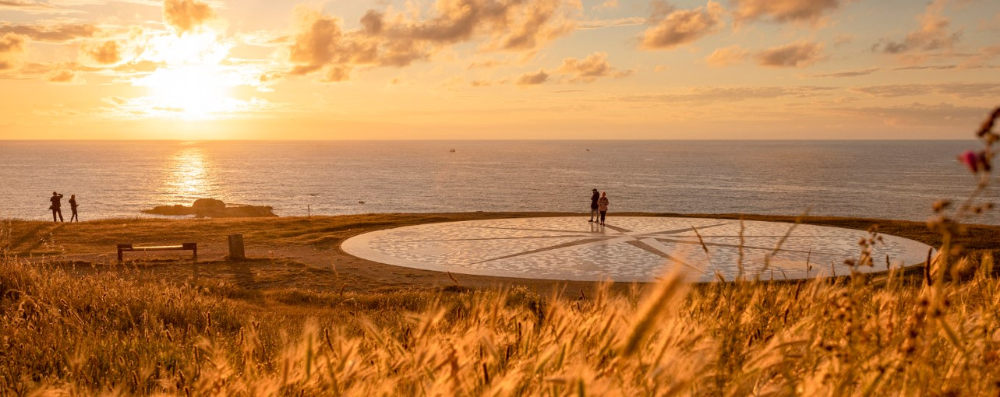
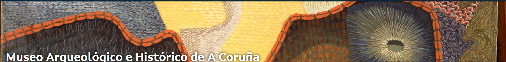

Si hay algo de lo que estamos orgullosos en A Coruña es que nuestro espíritu festivo es imparable. Nos encanta vivir nuevas aventuras, tenemos el mar para navegar y bucear, costas espectaculares donde dar largos paseos y, en definitiva, un ambiente de ensueño para cualquiera que ame la buena vida. Leer más
 Torre de Hércules. Visitar A Coruña tiene una parada obligada. En Punta Herminia está localizada. desde hace más de 2.000 años la torre de Hércules, el faro más antiguo del mundo que aún continúa en funcionamentto. Increíble, ¿verdad? Leer más
 El Castillo de San Antón, antigua fortificación construida para la defensa de la ciudad de A Coruña, se sitúa frente el Paseo del Parrote, en la conocida como "Illa da Pena Grande". Durante su período insular (hasta los años 40 del siglo XX), San Antón se comunicó con la ciudad desde la Casa de Botes o de O Boteiro, actualmente habilitada como una biblioteca Museo. Leer más